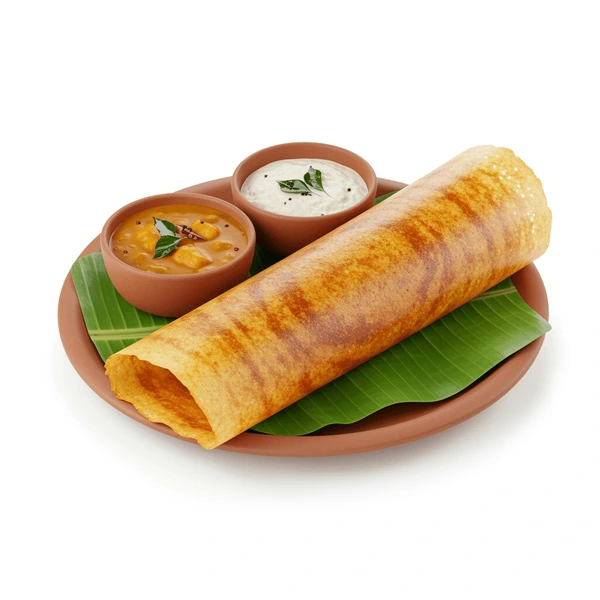

Home
Dosa

Description
Dosa is a thin, crispy South Indian crepe made from a fermented rice and urad dal batter. It is often served with sambhar and coconut chutney.
Ingredients
- 1 cup rice
- 1/4 cup urad dal
- 1/4 tsp fenugreek seeds
- Salt to taste
- Oil for cooking
Steps
- Soak rice and urad dal, grind into smooth batter, ferment overnight.
- Heat a non-stick pan, pour batter and spread thinly.
- Drizzle oil around edges, cook until golden and crispy.
- Serve hot with sambhar and chutney.